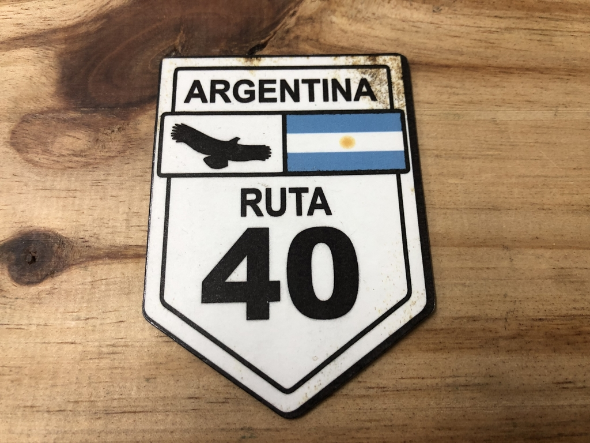

DESTINOS
-
RUTA 40
-
SANTIAGO DE CHILE
-
MOTO GP
Recorrer la ruta 40 es sin dudas un sueño y un desafío para los apasionados de las
dos ruedas. Según la revista Outside, la 40 está en el top 3 mundial de las mejores rutas para
recorrer en moto. De hecho, muchos de ellos invierten en la compra de una moto de grandes
cilindradas sólo
para hacer esta travesía. Pero estar preparados es fundamental, ya que, a lo largo de sus casi 5.200
kilómetros, une el extremo sur del país en Cabo Vírgenes, Provincia de Santa Cruz, avanzando con
rumbo norte hasta La Quiaca, en la Provincia de Jujuy.

La increíble ruta 40 atraviesa 11 provincias, enlazando 20 parques nacionales y reservas naturales,
asciende desde el nivel del mar hasta casi 5.000 metros de altitud, sube montañas y baja a los
valles. A lo largo de los kilómetros vas a encontrar partes de la ruta 40 asfaltadas, otras de
tierra y algunas de ripio; con tránsito o solitarias; con climas muy diversos y amplitud térmica en
el día y la noche. Cruza por 236 puentes, recorre ríos, pasa por desiertos y bosques, y también se
asoma a
glaciares y volcanes... Por eso, quienes se atrevan a esta aventura, deberán estar preparados para
cualquier situación no programada.
Apenas 380 kilómetros separan la ciudad de Mendoza de Santiago de Chile.
El Túnel Internacional Cristo Redentor es, sin lugar a dudas, la principal vía de comunicación
terrestre entre Argentina y Chile y por donde transitan la mayor cantidad de mercaderías de un país
a otro.
El Paso Internacional se ubica a 3.200 metros de altura sobre el nivel del mar y a 207 km. de la
ciudad de Mendoza, accediendo por la ruta 7 y 2 km. del paraje Las Cuevas. En Las Cuevas se
encuentra el destacamento de Gendarmería Nacional y las viviendas del personal de aduanas y
migraciones.
El paisaje es la mejor parte del viaje: comienza a 60 kilómetros de la ciudad de Mendoza, al margen
de la ruta nacional 7, que conduce a la frontera chilena, donde se encuentra el dique Potrerillos,
construcción que forma un lago de aguas sorprendentemente azules, donde desemboca el río Mendoza.
Pasada la represa, el río comienza a correr veloz, bordeando la ruta durante el resto del viaje.
Unos 40 kilómetros adelante, el paisaje se puebla de álamos y sauces. Una vez llegados a la ciudad
de Uspallata, la travesía continúa hasta el centro de esquí Penitentes, ya en plena Cordillera.
Próximo a Penitentes está el Puente del Inca, monumento natural formado por la erosión de las aguas
minerales del río Las Cuevas, que han otorgado al paraje una singular tonalidad naranja y amarilla.
Llegando al cruce, el camino es angosto y de doble mano, así que deben tener cuidado si quieren
pasar a algún camión.
Una vez pasada la frontera, se transita por un pintoresco camino de cornisa con un impresionante
zigzag llamado Los Caracoles para llegar a la Ciudad de Santiago y alrededores. A 70 km. del paso
fronterizo se encuentra la ciudad de Los Andes y a 156 km. la ciudad de Santiago de Chile. Desde Los
Andes sale la ruta 57, que finaliza en la capital chilena.
Durante el verano, el paso fronterizo está abierto las 24 hs, pero se recomienda siempre cruzar de
día, ya que la ruta es muy peligrosa de noche.
De abril a septiembre (aproximadamente, según la fecha de inicio y finalización de la temporada de
invierno), el horario de la frontera es de 8 a 20 hs.


MotoGP ™ regresó a Argentina en 2014 después de un largo descanso de 15 años, con el
circuito Termas de Río Hondo en la provincia norteña de Santiago del Estero convirtiéndose en sede
del Gran Premio de la República Argentina, una carrera que anteriormente se había celebrado en
Buenos Aires.
De hecho, el primer Gran Premio de Argentina tuvo lugar en 1961 cerca de la capital argentina, y fue
la primera vez que se realizó un GP fuera de Europa. En la era moderna, Termas de Río Hondo continúa
el legado de las carreras de motos en Argentina. La visita anual al país sudamericano crea un
ambiente de festival, proporcionando un espectáculo espectacular dentro y fuera de la pista.
El área local alrededor de Termas de Río Hondo y la provincia más amplia de Santiago del Estero
tiene
mucho que ofrecer si tiene ganas de explorar.
Una vez dentro de la provincia, es posible que desee visitar la ciudad capital de Santiago del
Estero,
que es la ciudad más antigua de Argentina, fundada en 1553, aunque muestra pocos signos de su pasado
colonial español.
Santiago del Estero es una ciudad relajada y cálida, conocida en otras partes de Argentina por su
música
folklórica y su ambiente relajado, siendo el principal punto focal la agradable plaza central, hogar
de
la atractiva catedral de Santiago. El Parque Aguirre de la ciudad, un extenso parque lleno de
eucaliptos
a la orilla del río, es un buen lugar para pasear.
La ciudad de Termas de Río Hondo es un destino agradable, con baños termales naturales, un lago
artificial, hoteles especializados en tratamientos de spa y sus numerosos restaurantes, todos
atendidos
por las corrientes de visitantes que pasan cada año.